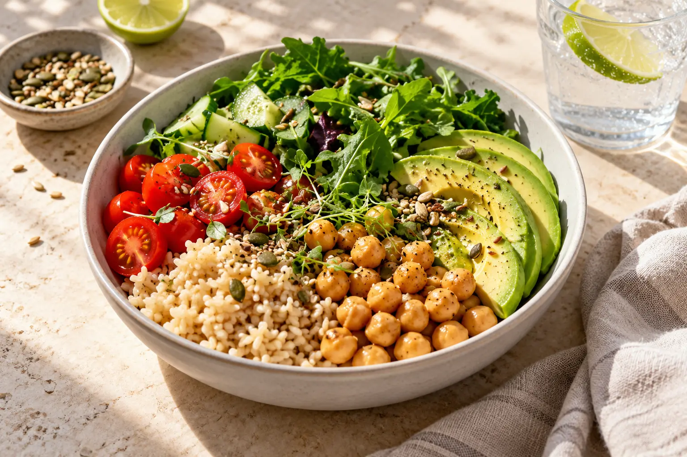
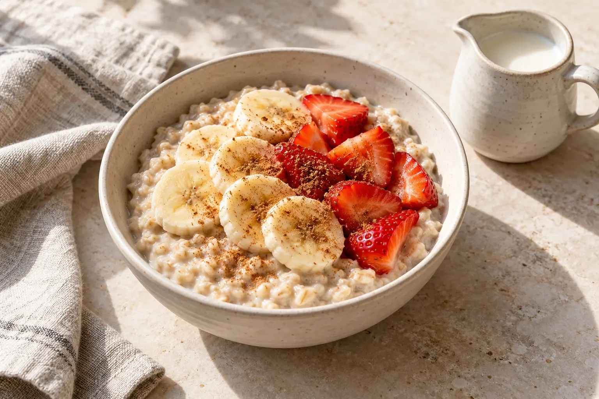
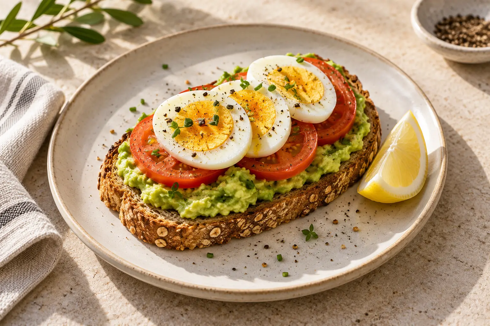
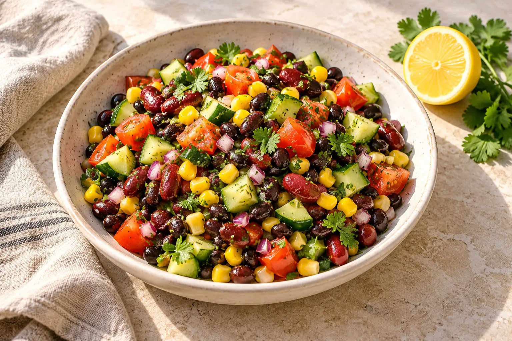
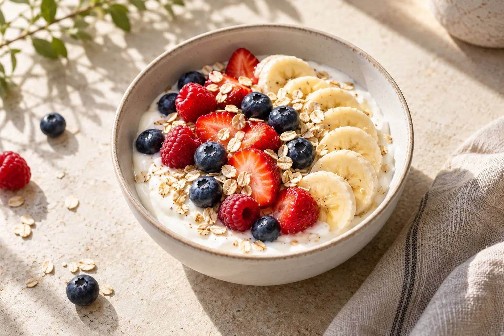
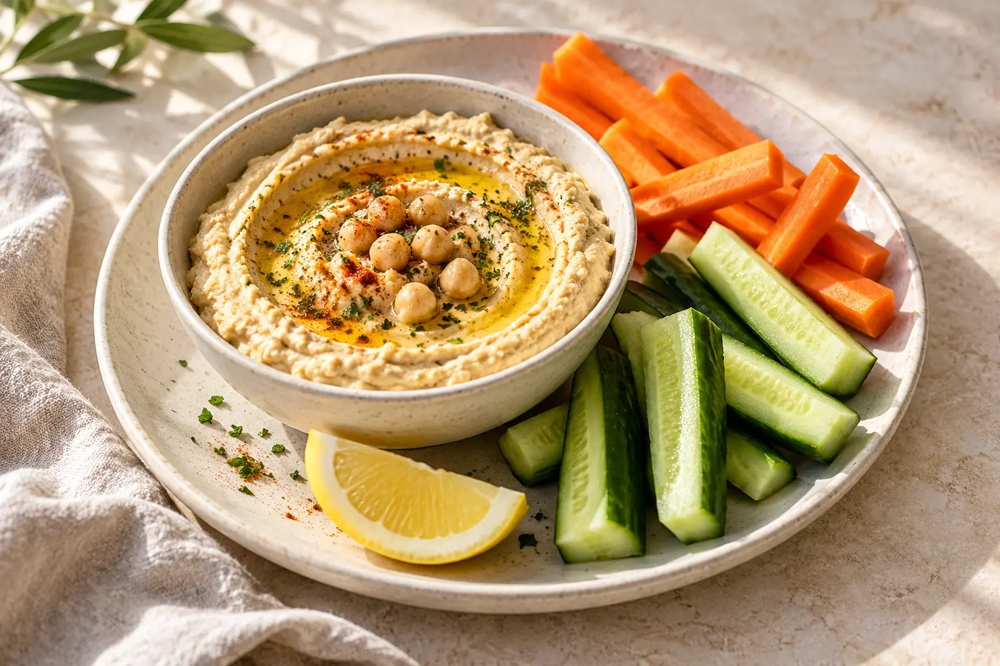

almuerzo · 15 min · 1 porción
Bowl de garbanzos
Una idea flexible con legumbres, cereales y vegetales.
Alimentarte también puede ser sencillo: variedad, ingredientes cotidianos y preparaciones que disfrutes.
Encuentra una receta
Combina alimentos de diferentes grupos.
Usa ingredientes que tengas disponibles.
Adapta las ideas a tus gustos y necesidades.
Recetas de inspiración, sin cálculo de calorías ni dietas restrictivas. Ajusta los ingredientes a tus necesidades y alergias.
Una idea flexible con legumbres, cereales y vegetales.

Un desayuno sencillo que puedes adaptar a tu gusto.

Ingredientes cotidianos en una preparación rápida.

Una combinación fresca con ingredientes accesibles.

Una merienda simple para variar durante la semana.

Una idea para acompañar con vegetales frescos.
Las imágenes son ilustrativas. Los tiempos son aproximados y las cantidades corresponden a las porciones indicadas.
Abre una receta y añade sus ingredientes a tu lista. Puedes marcar lo que ya tienes o descargar la lista para llevarla contigo.